吸光光度法答案G
1101 (A)
1102 (B)
1103 (D)
1104 (D)
1105 (C)
1106 (B)
1107 (A)
1108 (B)
1109 (C)
1110 (B)
1111 (D)
1112 波长λ(nm), 吸光度A
1113 72.3%
1114 T1/3 T2
1115 溶液浓度 液池(比色杯)厚度 吸光系数 e 摩尔吸光系数
1116 1.0, 500, 减小, 增大, 不变
1117 lgT1 c1
───── = ───, lgT2= 5lgT1=5×lg0.80= - 0.485
lgT2 5c1
T2= 32.7% , 即减弱67.3%
1118
A0= -lgT = -lg0.95 = 0.022
A1= -lgT = -lg0.352 = 0.453
A' = A1- A0= 0.453 - 0.022 = 0.431
T' = 10-A = 10-0.431 = 0.370 = 37.0%
1119 (B)
1120 (C)
1121 (B)
1122 (C)
1124 (A)
1126 50 10 ； ∞ 0
1127 浓度, 吸光度(A)
1128 滤光片的颜色应与被测试液的颜色互为补色。
放入参比溶液后,调节透射光的强度使检流计的指针在投射比100%处
1130
|
|
|
光源 |
单色器 |
光检测器 |
|
|
|
钨灯(白炽灯) |
玻璃棱镜 |
硒光电池 |
|
|
钨灯(白炽灯) |
玻璃棱镜 |
光电管 |
|
|
|
|
氢灯和钨灯 |
石英棱镜 |
光电倍增管 |
1132 1. C 2. A 3. D 4. B
1133 1. C 2. D 3. A 4. B
1134 A = -lgT , 1.0, A, A与c呈正比
1135 64%
1136 A=-lgT, 则 T=10-A=10-0.58=26.3%
A=-lgT=-lg0.70=0.155
0.434×DT 0.434×0.005
(a) Dc/c=±───────×100%= ±───────×100%
TlgT 0.263lg0.263
= ± 1.42%
0.434×0.005
(b) Dc/c= ±───────×100%= ±2.0%
0.70lg0.70
1137 1. C 2. D 3. B 4.A
1139 100-25
(1) c时, T = ───── = 75%
100
4c时 lgT = 4×lg0.75 T = 0.32 A = 0.49
T = 32%
(2) 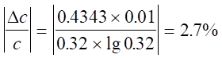
1140 0.42
1141 60% 5
1142 1000
0.0010×───
100
A = -lgT = ebc = eb─────────
Mr
eb×0.010 2.24×103×0.010×2
M = ──────── = ──────────── = 159 (g/mol)
-lgT -lg0.522
1143 A = abc
0.080
a = A/(bc) = -lg0.530/(2×───) = 86.2 [L/(g・cm)]
50
A = ebc
0.080
e = A/(bc)= -lg0.530/(2×──────) = 1.8×104[L/(mol・cm)]
50×207.2
1144 e = A/(bc )
0.088
= 0.740/(1×─────── ) = 2.35×104[L/(mol・cm)]
50×55.85 8
1145 A 0.800
c = ─── = ──────── = 6.15×0 -5 (mol/L)
e b 1.3×104×1.00
0.0300
M(苦味酸胺) = ─────── = 488 (g/mol)
6.15×10-5
则该有机胺的摩尔质量M = 488 - 229 =259 (g/mol)
1146 A = e・b・c
0.360
则 c = A/(eb) = ─────── = 1.2×10-5 (mol/L)
3.0×104×1
0.2000×1000×10
w(Fe) = 1.2×10-5×55.85/─────────×100% = 0.021%
25×25
1147 100
c×50×───×58.69 A×50×58.69
10
w(Ni)= ───────────×100%= ────────
m试×1000 ��b×m试
w(Ni)= A
50×58.69 50×58.69
m试 = ────── = ──────
e 1.3×104
= 0.23 (g)
1148
A 0.57
c有 = ─── = ──────── = 1.0×10-5 (mol/L)
��b e 5.7×104×1.0
c有 1.0×10-5
c水 = ─── = ────── = 1.0×10-6 (mol/L)
D 10
c总 = 1.0×10-5 + 1.0×10-6 = 1.1×10-5 (mol/L)
1.1×10-5×0.100×50.94
w(V)= ──────────── ×100% = 0.028%
0.2000
1149
已知 Ts = 21.6% 则 As = -lgT = -lg0.216 = 0.666
Tx= 25.7% 则 Ax= -lgT = -lg0.257 = 0.590
8.57×0.59
rx = ─────── + 8.57 = 16.2 (mg/mL)
0.666
1150
250×0.1000 = 0.02×V×54.94 V= 22.75 mL
Ax 0.310
rx= ───・rs= ────×0.1000 = 0.0738 (mg/mL)
As 0.420
原未知液中 r(Mn2+) = 0.0738×50/10 = 0.369 (mg/mL)
1151
5.00×10-4×10×5
r1= ────────── = 5×10-6 (g/mL)
100×50
r2 A2 A2×r1 0.200×5×10-6
─── = ── , r2= ───── = ───────── =4.35×10-6(g/mL)
r1 A1 A1 0.230
4.35×10-6×50×250
w(Fe) = ─────────── ×100% = 0.725%
5× 1.50
1152
-lgT -lg0.079
c = ─── = ─────── = 1.0×10-4 (mol/L)
eb 1.1×10-4×1
DA 0.434
Dc= ─── = ─────── = 3.9×10-5 (mol/L)
e b 1.1×104×1
cs = cx- Dc= 1.0×10-4 - 3.9×10-5 = 6.1×10-5 (mol/L)
1153
第一种情况下M2+完全被络合
A1 0.80
[MX3-]1= 5.0×10-4mol/L 则 e = ── = ─────── = 1.6×103 [L/(mol×cm)]
bc 1.0×5.0×10-4
A2 0.64
那么 [MX3-]2= ─── = ───────── = 4.0×10-4 (mol/L)
eb 1.6×103×1.0
[M2+]2= 5.0×10-4-4.0×10-4 = 1.0×10-4 (mol/L)
[X-]2= 2.5×10-3 - 3×4.0×10-4 = 1.3×10-3 (mol/L)
M2+ + 3X- = MX3-
[MX3-] 4×10-4
K总 = ─────── = ───────────
[M2-][X-] 1.0×10-4(1.3×10-3)3
= 1.8×109
1154
理论变色点pH即指示剂pKa
设总浓度为c, 当c全部以In-存在时,吸光度为A
[In-]1
则 pH1= pKa+ lg──────
c - [In-]1
[In-]2
pH2= pKa+ lg──────
c - [In-]2
A1 A2
[In-]1= ─── [In-]2= ───
eb eb
代入上式得:
A1 0.180
pH1= pKa+ lg──── = pKa+ lg───── = 4.50 ...(1)
A - A1 A - 0.180
A2 0.360
pH2= pKa+ lg──── = pKa+ lg───── = 5.10 ...(2)
A - A2 A - 0.360
解得 A = 0.540
代入(1)式(或(2)式)解得 pKa= 4.80
1156 [FeR3] K(FeR3)
(1)K'(FeR3) = ─────── = ─────
[Fe2+][R’]3 a3R(H)
[FeR3] K(FeR3)[R']3
∴ ───── = ────────
[Fe2+] a3R(H)
1021.3×(1.0×10-4)3
= ─────────────
(101.9)3
= 103.6 > 103
∴ 有99.9%以上的Fe2+络合为FeR3
(2) A = -lgT = -lg0.6000 = 0.222
A 0.222
c = ─── = ───────── = 2.02×10-5 mol/L
eb 1.1×104×1.0
100
2.02×10-5×50×───×55.85
10
∴w(Fe) = ───────────────×100%
0.500×1000
= 0.113%
3101 (C)
3102 (C)
3103 (D)
3104 (B)
3105 当一束平行单色光垂直通过某溶液时,溶液的吸光度A与吸光物质的浓度c及液层厚度b成正比。
3106 朗伯-比耳定律 A= ebc, A为吸光度, b为吸收介质厚度, e为摩尔吸光系数, c为吸光物质的浓度。
3107 A=-lgT
3108 L/(g・cm), L/(mol・cm)
3109 A = ebc, A = abr
3110 2lgT0
3111 不同, 最大吸收波长(lmax)
3112 不变, 不变
3113 0.5c, 1.5c
3114 0.471, 69.7%
3115 75% , 0.60
3116 T
3117 当吸光物质的浓度为1mol/L,液层厚度为1cm时,某溶液对特定波长光的吸光度。
3118 1.3×10-3mg/cm
3119 0.400
3120 36.7
3121 互补
3122 (A)
3123 0.2~0.8, 0.43
3124 获得单色光, 颜色互补, 不同
3125 玻璃棱镜, 光电管
3126 有色络合物MR与显色剂R之间的颜色差别 (dl = l最大(MR)-l最大(R)) 60nm
3127 零点, 蒸馏水(或试剂空白), 试液, 被测组分, 显色剂。
3128 0.107
3129 36
3130 12%
3131 A = 0.26 c = 5.9×10-1mg/mL×10-6×103/58.69 = 1.00×10-5(mol/L)
A 0.26
e = ── = ──────── = 1.3×104(L/mol・cm)
bc 2×1.00×10-5
3132 T = 100%-31.6% = 68.4% A = 0.165
A 0.165
c= ── = ─────── = 3×10-5(mol/L)
eb 1.1×104×0.5
3133
Ar 63.55
e = ── = ───── = 2.9×104
S 0.0022
0.01 0.01
c(Cu2+) = ── = ───── = 3.4×10-7(mol/L)
eb 2.9×104
r(Cu2+) = 3.4×10-7×63.55×106×10-3 = 0.022(mg/mL)
3134 A = 0.220
0.220
c = ─────── = 1.25×10-6(mol/L)
2×8.8×104
r = 1.25×10-6×10-3×112.4×106 = 0.14(mg/mL)
3135 A = 1.00
A 1.00
c = ── = ────── = 4.0×10-5(mol/L)
eb 2.5×104
5.0×10-3
Ar = ────── = 125
4.0×10-5
3136 A 0.434
c = ── = ─────── = 2×10-4(mol/L)
eb 2.2×103×1
2×10-4×100 100
m = ───────×54.94×─── = 0.73 (g)
1000 0.15
3137 ∵Dc/c最小时, A = 0.43
c(Mn) = 0.43/4.3×10-3×1=1.0×10-4(mol/L)
设称取试样的质量为ms
∴ms×0.0050×(1000/100)/54.5 = 1.0×10-4 ms = 0.11g
3138 设mx为试液在100mL中含锰的质量
∵Ax/As = mx/ms
mx = 2.36×0.578×0.0025 = 3.4×10-3(g)
3.41×10-3
∴w(Mn) = ──────×100% = 0.34%
1.000×1
3139 一般光度法 已知As = 0.700, Ts = 20%
Ax = 1.00, Tx = 10%
示差光度法 Tx = 1.0×0.10/0.20 = 0.50 = 50%
Ax = -lgTx = -lg0.50 = 0.300
3140 ∵A = ebc
c = 0.496/2.24×103×1
= 2.21×10-4(mol/L)
2.21×10-4×54.96
∴w(Mn)= ──────────×100% = 0.23%
0.5250×1000/100
3141
2.04×104×0.398-3.13×102×0.301
cx = ────────────────────── = 1.4×10-5(mol/L)
2.80×104×2.04×104-3.13×102×1.98×103
0.301-1.98×103×1.4×10-5
cy= ─────────────── =1.3×10-5(mol/L)
2.04×104
3142
1.∵A = ebc,第一份显色液X-过量。
∴c(MX3-) = 5.0×10-4mol/L,
e = 0.748/5.0×10-4×1 = 1.5×103(L/mol・cm)
2.在第二份试液中,[MX3-] = 0.587/1.5×103×1 = 3.9×10-4(mol/L)
[M2+] = 5.0×10-4-3.9×10-4 = 1.1×10-4(mol/L)
[X-] = 2.0×10-3-3.9×10-4×3 = 8.3×10-4(mol/L)
[MX3-] 3.9×10-4
K(MX3-)= ────── = ──────────── = 6.2×109
[M2+][X-]3 1.1×10-4×(8.3×10-4)3
3143
A = 0.200
0.200
c(MR2) = ─────── = 5.0×10-6(mol/L)
1×4×104
[MR2] 5.0×10-6
K稳 = ──── = ────────────────────────
[M][R]2 (5.0×10-5-5.0×10-6)(2.0×10-5-5.0×10-6×2)2
= 1.1×109
3144 1.c原 = 0.396/396.0 = 1.0×10-3(mol/L)
c试 = 1.00×10-3×1/100 = 1.00×10-5(mol/L)
2. e(HIn) =0
A 1.76
e(In) = ── = ──────── = 1.76×105(L/mol・cm)
bc 1×1.00×10-5
3. A(In)-A 1.76-0.575
pKa = pH+lg───── = 7.60+lg───── = 7.91
A-A(HIn) 0.575-0.00
3145 普通法 A标 = 0.700 T = 20.0%
A试 = 1.00 T = 10.0%
DT = 20%-10% = 10%
示差法吸光度 DA = 1.00-0.700 = 0.300 T'试 = 50.0%
DT' =T'标-T'试 = 100%-50% = 50%
DT '/DT = 50/10 = 5
3146 设标样的吸光值为A1,样品为A2
A2/A1 = c2/c1 = 1.5
c2 = 1.5×c1 = 1.5×1.00×10-3 = 1.50×10-3(mol/L)
1.50×10-3×54.94×250
w(Mn) = ────────────×100% = 2.06%
1000×1.00
5101 e = 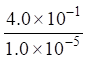
T =85% A=7.1´10-2
e2 = 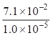
生成MR'的显色反应更灵敏。
5102
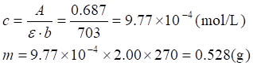
5103 据工作曲线得尿样显色溶液中 r(P) = 6.10´10-8 g/mL
原尿样中r(P) = 6.10´10-8´50¸1.00 = 3.05´10-6 g/mL
m(P) = 3.05´10-6´1270 = 3.87´10-3(g)
5104
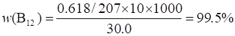
5105 微量；灵敏度高，操作简便，快速，应用广泛。
5106 透射比或透光率；吸光度。
5107 MR = M+R 设M浓度为x
x2/(0.00500-x)=6.00´10-4 x=1.46´10-3 mol/L
[MR] = 5.00´10-3-1.46´10-3=3.54´10-3 (mol/L)
A= ebc = 450´3.54´10-3´1 = 1.59
5108
A=0.001时，单位截面积光程所能检测出的吸光物质的最低含量；mg/cm2。
5109 lmax ; 在lmax处有吸收干扰。
5110 非单色光；化学因素。
5111 钨灯；氘灯。
5112 n(M):n(R)=1:1
5113 n(M):n(R)=1:2
5114 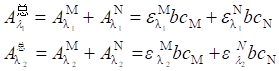
5115 吸光度的加和性；解联立方程。
5116 (C)
5117 (D)
5118 (D)
5119 (C)
5120 (C)
5121 不变；减小。
5122 两种特定颜色的光按一定比例混合，可以得到白光，这两种特定颜色的光称为互补光。
5123 A=-lgT
c = 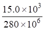
e= 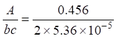
5124 1) A=ebc c = 0.425/1.26´104 = 0.340´10-4 mol/L
r = 3.40´10-5´93=3.16´10-3 (g/L)
2)
5125 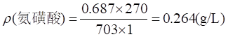
5126
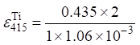
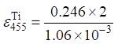
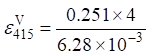
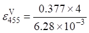
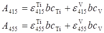 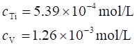
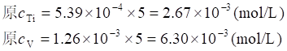